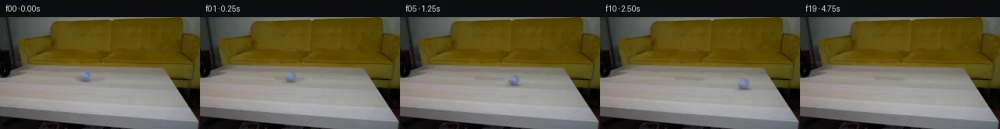

![首帧]()

Round 00
2026-11-04T21:33:05.968295+00:00像素候选变化代码 +313/−0inspection 更新
pixels 4fb465d48560cd6b · code 73c9d8f757ec0181
查看本轮 generate.py 真实 diff
--- previous/generate.py
+++ current/generate.py
@@ -0,0 +1,313 @@
+"""Local pixel continuation. No models, references, network, or image viewers."""
+from pathlib import Path
+import json
+import math
+
+import cv2
+import numpy as np
+from PIL import Image, ImageDraw
+from scipy.ndimage import gaussian_filter, map_coordinates
+from scipy.optimize import least_squares, brentq
+
+from artifact_io import save
+
+ROOT = Path(__file__).resolve().parent
+SOURCE = np.array(Image.open(ROOT / 'first_frame.png').convert('RGB'))
+H, W = SOURCE.shape[:2]
+Y, X = np.mgrid[:H, :W]
+SS = 4
+
+
+def clean_table():
+ # Interpolate along the observed slant of the wood bands. Both endpoints
+ # come from this frame, outside the full ball-and-shadow removal support.
+ mask = (((X - 108.8) / 10.8)**2 + ((Y - 75.7) / 9.1)**2 < 1)
+ mask |= (((X - 111.0) / 15.0)**2 + ((Y - 81.7) / 4.6)**2 < 1)
+ clean = SOURCE.astype(float).copy()
+ src = SOURCE.astype(float)
+ ys, xs = np.nonzero(mask)
+ for y, x in zip(ys, xs):
+ distances = []
+ for direction in (-1, 1):
+ distance = 1
+ while True:
+ qx = x + direction * distance
+ qy = y + direction * distance * 0.085
+ if not mask[int(round(qy)), int(qx)]:
+ break
+ distance += 1
+ distances.append(distance + 1)
+ left, right = distances
+ colors = []
+ for direction, distance in ((-1, left), (1, right)):
+ qx = x + direction * distance
+ qy = y + direction * distance * 0.085
+ colors.append(np.array([
+ map_coordinates(src[..., c], [[qy], [qx]], order=1)[0]
+ for c in range(3)
+ ]))
+ recovered = (colors[0] * right + colors[1] * left) / (left + right)
+ # Keep original photographic grain with a small same-row donor residual.
+ donor = src[y, x + 43]
+ donor_smooth = src[y, x + 41:x + 46].mean(axis=0)
+ clean[y, x] = recovered + 0.45 * (donor - donor_smooth)
+ return np.clip(np.rint(clean), 0, 255).astype(np.uint8), mask
+
+
+PLATE, REMOVAL_MASK = clean_table()
+FIT_BOX = (93, 62, 130, 92)
+
+
+def sphere_arrays(cx, cy, rx, ry, sigma, box):
+ x0, y0, x1, y1 = box
+ sy, sx = np.mgrid[y0 * SS:y1 * SS, x0 * SS:x1 * SS]
+ nx = ((sx + 0.5) / SS - 0.5 - cx) / rx
+ ny = ((sy + 0.5) / SS - 0.5 - cy) / ry
+ rho2 = nx * nx + ny * ny
+ inside = rho2 < 1
+ nz = np.sqrt(np.maximum(0, 1 - rho2))
+ basis = np.stack((np.ones_like(nx), nx, ny, nz, nx * ny,
+ nx * nx - 1/3, ny * ny - 1/3, nx * nz, ny * nz), -1)
+ alpha = inside.astype(float)
+ premult = basis * alpha[..., None]
+ if sigma:
+ alpha = gaussian_filter(alpha, sigma * SS)
+ premult = gaussian_filter(premult, (sigma * SS, sigma * SS, 0))
+ bh, bw = y1 - y0, x1 - x0
+ alpha = alpha.reshape(bh, SS, bw, SS).mean(axis=(1, 3))
+ premult = premult.reshape(bh, SS, bw, SS, 9).mean(axis=(1, 3))
+ return alpha, premult, nx, ny, nz, inside
+
+
+def source_shadow(cx, cy, ry, broad, core, box):
+ x0, y0, x1, y1 = box
+ yy, xx = np.mgrid[y0:y1, x0:x1]
+ contact = cy + ry - 0.15
+ soft = np.exp(-0.5 * (((xx - cx - 2.0) / 7.1)**2
+ + ((yy - contact + 0.2) / 2.05)**2))
… diff truncated; 226 more lines …